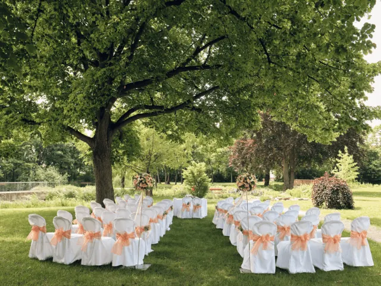
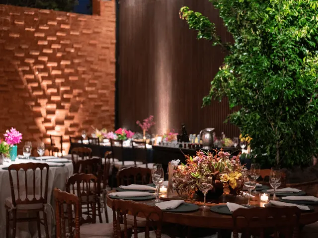

Partnerbijdrage
Welke trouwlocatie kies je voor jouw droombruiloft?
Gepubliceerd op 30 maart 2023, bijgewerkt op 26 mei 2025
Onderdeel van de gids Trouwen in Nijmegen en Zaal huren in Nijmegen

Een droombruiloft begint met het vinden van de perfecte locatie, en in de omgeving van Nijmegen zijn er talloze prachtige plekken waar je kunt trouwen. Maar hoe kies je nu de juiste locatie voor jouw bruiloft? En welke locaties zijn er allemaal beschikbaar in de buurt van Nijmegen?
Wat voor soort bruiloft past bij jou?
Als je op zoek bent naar een locatie voor je bruiloft in Nijmegen, is het belangrijk om eerst te bedenken wat voor soort bruiloft je wilt: intiem met alleen familie en vrienden, of juist groots met honderden gasten?
Ook is het belangrijk om de sfeer vast te stellen die bij jullie als bruidspaar past: romantisch in een kasteel of landhuis, of moderne en strakke locaties aan het water, in het bos of midden in de stad. Als je eens een idee hebt wat je precies zoekt, kun je gaan kijken welke locaties er beschikbaar zijn rondom Nijmegen. Er zijn talloze mooie trouwlocaties te vinden die perfect passend bij jouw wensen zijn.
Waar moet je allemaal rekening mee houden bij het kiezen van je trouwlocatie?
Je trouwdag is misschien wel één van de belangrijkste dagen van je leven, en daar hoort natuurlijk de perfecte locatie bij. Maar waar moet je eigenlijk allemaal rekening mee houden bij het kiezen van de ideale trouwlocatie?
Een belangrijk aspect is natuurlijk de grootte en capaciteit van de locatie. Zorg dat er genoeg ruimte is voor al je gasten en dat de locatie past bij de grootte van je bruiloft. Maar ook de locatie en bereikbaarheid zijn van belang. Is de locatie makkelijk bereikbaar voor al je gasten en is er voldoende parkeergelegenheid?
Daarnaast is het handig om te kijken naar de faciliteiten en voorzieningen van de locatie. Denk hierbij aan catering, muziek, verlichting en decoratie. Maar ook het regelen van een videograaf of een fotograaf. Zijn deze voorzieningen aanwezig op de locatie of moet je deze zelf regelen? En natuurlijk wil je ook weten wat de kosten zijn en of deze binnen jullie budget passen.

Wat zijn de meest populaire trouwlocaties van Nijmegen?
Een paar populaire trouwlocaties in Nijmegen zijn bijvoorbeeld het stadhuis, de Stevenskerk, de Waagh, en de Lindenberg. Om je wat te kiezen te geven hebben we een top 8 bovenop de zojuist genoemde locaties voor je samengesteld:
- Landgoed Brakkesteyn: Een historisch landhuis met een prachtig park. Ideaal voor een romantische buitenbruiloft.
- Het Koetshuis: Een sfeervolle locatie in de bosrijke omgeving van Berg en Dal. De perfecte plek voor een intieme bruiloft.
- De Vereeniging: Een prachtig gebouw in het hart van Nijmegen. De grote zaal biedt ruimte voor een grootse bruiloft.
- Het Ketelhuis: Een industriële locatie met veel karakter en sfeer. Perfect voor een hippe en moderne bruiloft.
- De Wolfsberg: Een sfeervolle locatie met een prachtig uitzicht over de Ooijpolder. Ideaal voor een romantische buitenbruiloft.
- Stadsschouwburg Nijmegen: Een imposant gebouw in het centrum van Nijmegen. De theaterzaal biedt ruimte voor een bijzondere en indrukwekkende ceremonie.
- De Hemel: Een karakteristieke locatie in het historische Valkhofkwartier van Nijmegen. De voormalige brouwerij is perfect voor een sfeervolle bruiloft.
- Wijnfort Lent: Als jullie op zoek zijn naar een unieke en bijzondere trouwlocatie, dan is Fort Lent een absolute aanrader! Gelegen in het prachtige Nijmegen, is dit fort niet alleen een officiële trouwlocatie van de gemeente, maar ook de ideale plek voor het vieren van jullie bruiloft en huwelijksfeest. Met mogelijkheden voor een ceremonie, receptie, diner, feestavond en zelfs overnachting voor jullie en jullie gasten, regelt Fort Lent alles tot in de puntjes. En met hun flexibiliteit en bereidheid om mee te denken, is bijna alles mogelijk.

Wanneer moet je reserveren bij een trouwlocatie?
Als je een geschikte locatie voor je bruiloft hebt gevonden, is het belangrijk om zo snel mogelijk te reserveren. Sommige populaire trouwlocaties zijn al maanden of zelfs jaren van tevoren volgeboekt. Het is daarom verstandig om zo vroeg mogelijk te reserveren om teleurstelling te voorkomen. Het is ook een goed idee om de locatie persoonlijk te bezoeken en ervoor te zorgen dat alles wat op je wensenlijstje staat, ook daadwerkelijk mogelijk is op deze locatie.
Conclusie
Het kiezen van een trouwlocatie in de omgeving van Nijmegen is een cruciaal onderdeel van de voorbereiding van je droombruiloft. Met een diversiteit aan locaties, van romantische kastelen en landhuizen tot moderne locaties aan het water of in het bos, biedt Nijmegen voor elk bruidspaar wat wils. Bij het selecteren van een trouwlocatie is het essentieel rekening te houden met de grootte, bereikbaarheid, faciliteiten en kosten. Populaire locaties zoals Landgoed Brakkesteyn, Het Koetshuis, De Vereeniging, en Wijnfort Lent bieden unieke settings voor een onvergetelijke dag. Het is belangrijk om tijdig te reserveren bij deze gewilde locaties. Voor een complete trouwervaring is winkelen in Nijmegen ook ideaal, met talloze opties voor trouwringen, kleding en accessoires. Het plannen van een bruiloft in Nijmegen biedt dus de perfecte combinatie van een prachtige locatie en een geweldige winkelervaring.
DE ULTIEME TROUWGIDS VIND JE HIER
Zalen en locaties in Nijmegen
Zin om te beginnen? In onze bedrijvengids vind je alle 24 locaties in Nijmegen, met openingstijden, kenmerken en een kaart.
Bekijk alle 24 locaties in Nijmegen
Heb je zelf een locatie? Laat je hier uitlichten.